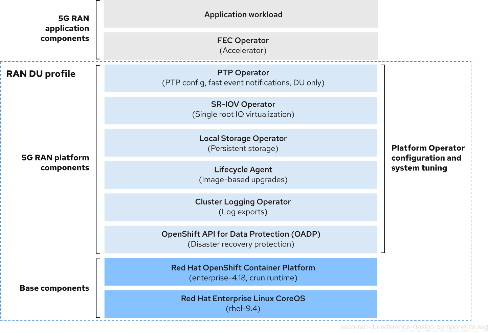

Introduction to Telco Related Infrastructure Operators
When working on RAN environments there are a set of operators that will be common to almost all of them. In this section we will introduce the various OpenShift Container Platform components that you use to configure and deploy clusters to run telco RAN DU workloads.

Node Tuning Operator
The Node Tuning Operator helps you manage node-level tuning by orchestrating the TuneD daemon and other OS level tuning. In the context of RAN deployments it is used to achieve low latency performance by using the Performance Profile controller.
In RAN environments we will leverage the PerformanceProfile API in order to:
-
Update the kernel to kernel-rt.
-
Configure CPUs for housekeeping (reserved CPUs).
-
Configure CPUs for running workloads (isolated CPUs).
-
Configure workloadHints to enable tuning of power savings vs performance. More here.
The Node Tuning Operator is part of the standard OpenShift installation.
You can read more about the NTO here.
SR-IOV Operator
This Operator helps you manage SR-IOV network devices and network attachments. You can think of an SR-IOV NIC like a hypervisor for NICs, you have a physical NIC and you can create (a limited number of) virtualized NICs out of it.
We usually refer to this virtualized NICs as virtual functions (VFs), and these are exposed in the containers in order to provide extra networks to workloads. These VFs are "slices" of the underlying NIC which are passed into the container as hardware devices. This allows the container direct access to that "slice" of the NIC and is typically used to provide high performance access to networking.
You can read more about the SR-IOV operator here.
PTP Operator
Precision Time Protocol (PTP) is used to synchronize clocks in a network, as discussed previously. When used in conjunction with hardware support, PTP is capable of sub-microsecond accuracy, and is more accurate than Network Time Protocol (NTP).
The PTP Operator can be used to configure PTP on OpenShift nodes.
Some extra PTP information you may find useful:
Accelerators Operators
Specialized hardware devices can be used to accelerate 4G/LTE and 5G virtualized radio access networks (vRAN) workloads. The use of these devices increases the overall compute capacity of a commercial, off-the-shelf platform by offloading compute intensive tasks to dedicated hardware.
In order to manage these devices, there are multiple accelerator operators that we may need to deploy in our OpenShift clusters.
Logging Operator
The Logging Operator provides a set of APIs to control collection and forwarding of logs from all pods and nodes in a cluster. This includes application logs (from regular pods), infrastructure logs (from system pods and node logs), and audit logs (special node logs with legal/security implications). In telco RAN DU configurations logging is used to collect logs from the far edge node for remote analysis.
The Logging Operator does not collect or forward logs itself: it starts, configures, monitors and manages the components that do the work. Notice that in the RAN use model the fluend log collector is deprecated in favor of Vector log collector.
Lifecycle Agent Operator
The Lifecycle Agent provides local lifecycle management services for single-node OpenShift clusters. The Lifecycle Agent is not applicable in multi-node clusters or single-node OpenShift clusters with an additional worker.
From OpenShift Container Platform 4.14.13, the Lifecycle Agent provides you with an alternative way to upgrade the platform version of a single-node OpenShift cluster. The image-based upgrade is faster than the standard upgrade method and allows you to directly upgrade from OpenShift Container Platform <4.y> to <4.y+2>, and <4.y.z> to <4.y.z+n>.
You can read more about the image-based upgrade technology here.
Storage Operators
LVM Storage can be used as the local storage implementation for the RAN DU use case. When LVM Storage is used as the storage solution, it replaces the Local Storage Operator, and the CPU required is assigned to the management partition as platform overhead.
LVM Storage provides dynamic provisioning of block and file storage. LVM Storage creates logical volumes from local devices that can be used as PVC resources by applications. Volume expansion and snapshots are also possible.
OpenShift API for Data Protection Operator
The OpenShift API for Data Protection (OADP) product safeguards customer applications on OpenShift Container Platform. It offers disaster recovery protection, covering OpenShift Container Platform applications, application-related cluster resources, persistent volumes, and internal images.
| OADP does not serve as a disaster recovery solution for etcd or OpenShift Operators. |
OADP support is provided to customer workload namespaces, and cluster scope resources. It is specially essential during image-based upgrades, when we need to backup customer and cluster resources prior to the upgrade process and then restore that information once the upgrade is completed.
You can read more about the OADP operator here.